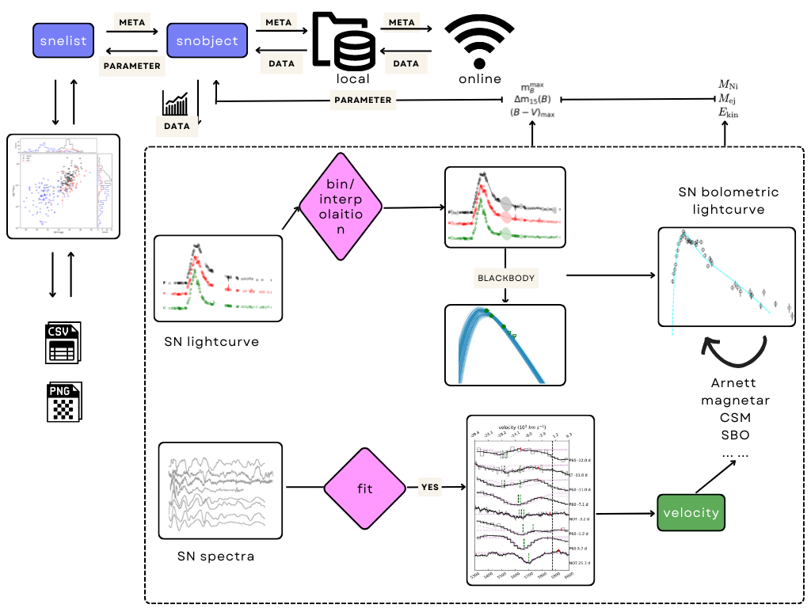

Welcome to the HAFFET documentation¶
Background¶
The progenitor scenarios of supernovae (SNe) are still open questions, and one approach to diagnose their physical origins is to investigate the bolometric light curves of a large set of SNe, and fit them to theoretical models to estimate their physical parameter distributions. Such analysis from different studies often use different approaches and codes which makes the comparisons more difficult. A generic code-package to handle light curve fitting for transients with different types, from different surveys, in different cadences, is therefore useful to provide reliable results for comparison. For this purpose, we present HAFFET, a data-driven model fitter for transients.
What is HAFFET?¶
HAFFET: Hybrid Analytic Flux FittEr for Transients is an open source Python package to help analyze SN photometric and spectroscopic data.
The aim of HAFFET is to handle observational data for a set of targets, to estimate their physical parameters, and visualize the population of inferred parameters. Therefore, there are two classes defined, i.e. snobject is to deal with data and fittings for one specific object, and snelist is to organise the overall running for a list of objects. The inheritance scheme of HAFFET is shown as a directed flowchart below:
{kind=link}
As shown, HAFFET provides utilities to:
download SN data from online sources:
ZTF alert photometry/spectra from Growth marshal/fritz via ztfquery (an account is needed; for ZTF internal collaborators).
ZTF forced photometry services (an account is needed; open public).
ATLAS forced phtometry services (an account is needed; open public).
Open Astronomy Catalog (open public).
Private lightcurves/spectra from users (take care of data format).
intepolated multi band lightcurves with:
Gaussian Process regression (via george).
fittings to analytic SNe lightcurve models, e.g. Bazin et al. (2009), Villar et al. (2019), and the SALT model for SNe Ia.
characterise the first light and rising of SNe with power law fits:
on multi band photometry simultaneously, developed based on Miller et al. (2020) (Github).
on different bands seperately.
match epochs of different bands, via:
binning
GP interpolation
model fittings
calculate colours, and/or construct the spectral energy distribution (SED) by assuming e.g. a blackbody distribution.
estimate bolometric LCs via:
bolometric corrections defined in Lyman et al. (2014) for stripped envelope SNe or SNe II, and Chen et al. (2022) for SLSNe.
diluted black body fits on the estimated SEDs constructed from multi-band photometry. The blackbody fits are developed following superbol, and the dilution factor are based on Dessart & Hillier (2005).
integration of the absolute calibrated spectra.
estimate host galaxy extinction by:
comparing colours to intrinsic colours, e.g. Stritzinger et al. (2018), Taddia et al. (2015), etc.
fit the constructed bolometric lightcurves to different models, e.g.:
the Arnett models for SNe Ia and core collapse during their main peaks.
the gamma ray leakage tail model for SNe Ia and core collapse at tail phases.
the shock cooling emission model for SNe IIb or some Ibc that have early shock cooling tails.
identify and fit the absorption minima of spectral lines with, e.g.:
fit the spectral line velocity evolution with, e.g.:
Exponential function.
scatter all above features into parameter spaces for sample exploration.
It should be noted that besides above build-in models, we provide possibility for users to add their own models, or import models from other python packages (e.g. MOSFIT, redback, etc) into HAFFET, to fit on data prepared by our build-in engines. For instance, for those transients that are unlikely to be explained by the Arnett model, one could try fit their bolometric lightcurves with the magnetar/CSM models for the SLSNe, kilonovae/afterglow models for the fast transients, etc. Some demo codes show how to implement these can be found here.
In HAFFET, there are two approaches implemented as hyperparameter optimization routine:
scipy.optimize (https://docs.scipy.org/doc/scipy/reference/optimize.html), which is fast.
emcee (https://emcee.readthedocs.io/en/stable/), which is reliable.
Documentation¶
API¶
Indices and tables¶
Contact¶
If you need additional help, you’re welcome to join our slack channel, or report any issues here, or drop us an email.